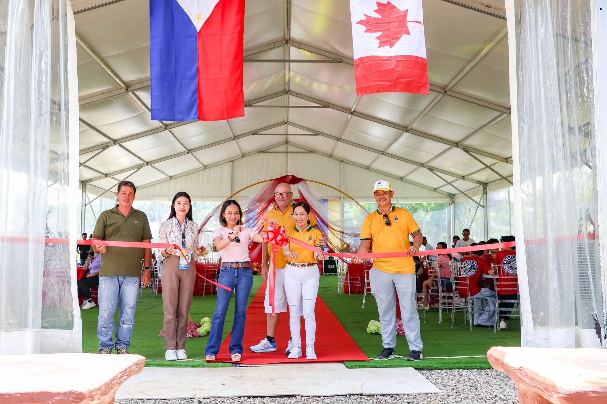
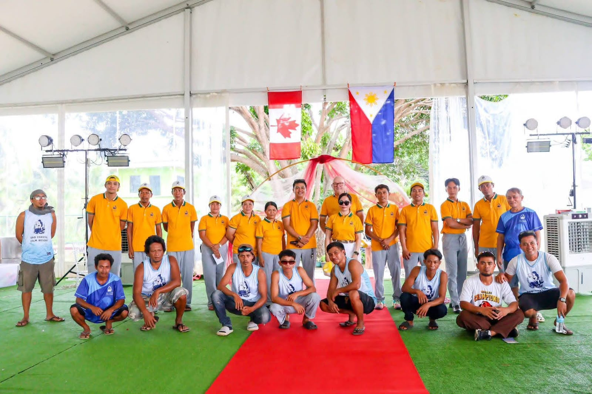

Our Story
Long before D&D Coastal Calm Resort became a sanctuary by the sea, this stretch of coastline in Mercedes, Poro had already witnessed generations of life, labor, and secrecy.
The Pearl Farm Era

This coastline in Mercedes, Poro — photographed from the air — is the land that once held pearl-farming rafts.
In its earliest modern chapter, this land served as a working pearl farm. Drawing on techniques pioneered in Japan by Kokichi Mikimoto, the calm waters of the Camotes became home to oyster cultivation. Wooden rafts dotted the cove, and for years this place quietly produced treasures that traveled far beyond the islands.
World War II and the Japanese Occupation
During the Japanese occupation, many local families sought safety in the island’s natural caves — including those along this coastline. These shelters became temporary sanctuaries. The stories of those years still live in local memory.
Whispers of the Past
After the war, the property continued to change hands. Local oral history preserves stories of a more enigmatic past — rumors of forbidden access, restricted areas, and the discovery of hidden rooms in older structures. These tales remain part of the land’s quiet character.
Soft Opening – July 2026

In July 2026, D&D Coastal Calm Resort opened its doors for the first time. After years of careful planning, sustainable construction, and a deep respect for the land’s history, the resort welcomed its first guests.
The soft opening marked the beginning of a new chapter — one focused on warm hospitality, oceanfront relaxation, and creating meaningful memories for families, friends, and groups who choose to spend time here.
Building the Resort
Watch a glimpse of the construction process as the infinity pool took shape:
More videos from our journey are available on our YouTube channel.
A New Chapter

Today we continue to grow thoughtfully. Solar power, responsible systems, and low-impact design guide our approach. What was once a pearl farm, a wartime refuge, and a place of local legend is now becoming a peaceful sanctuary by the sea.
This land has held many stories.
We are honored to help shape the next one.
Find us
Location: Mahaba Road, Mercedes, Poro, Camotes Islands, Cebu · about 15 minutes from Poro Port.